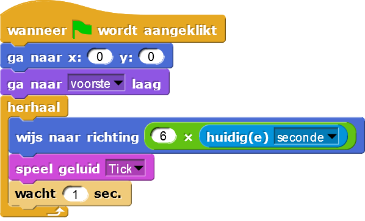

Op de klok staat er om de 6° een streepje. Dit is zo omdat er 360° in een cirkel zitten en 60 seconden in een minuut, dus 360° / 60 = 6°.
Schrijf nu de code voor de secondewijzer. Zet eerst de sprite in het midden van het scherm en zorg er voor dat
hij vooraan staat, boven de minutenwijzer en uurwijzer. Laat de wijzer nu in de goeie richting wijzing,
gebaseerd op de huidige seconde: 6° voor iedere seconde.

Het is waarschijnlijk handig om te onthouden dat in Snap! positieve hoeken met de klok mee berekend
worden vanaf 0°, omhoog:
In de code voor de secondewijzer moet je ook zorgen dat het "tik"-geluid van de klok afgespeeld wordt. Het
wacht 1 seconde-blok zorgt ervoor dat er een pauze is nadat het geluid afgespeeld wordt en dat het
geluid maar één keer per seconde afgespeeld wordt.